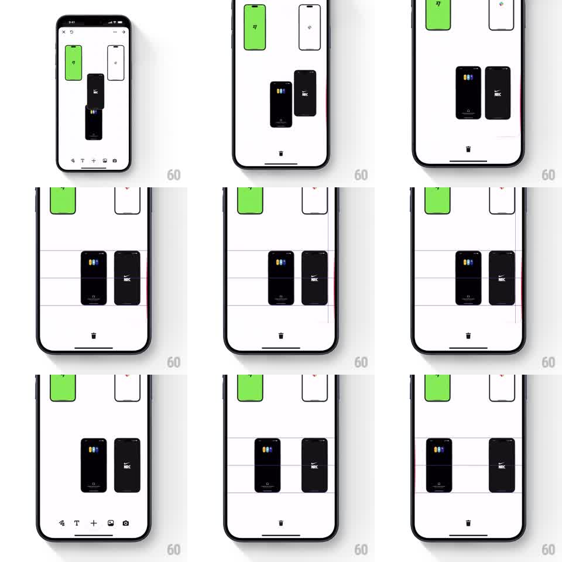

Media
Frame-by-frame

Rebuild this interaction 1:1: Pinterest's collage canvas - dragging a card reveals red alignment guide lines when its center or edges line up with other cards, with magnetic snapping, while the bottom toolbar transitions between edit states.

Rebuild this interaction 1:1: Pinterest's collage canvas - dragging a card reveals red alignment guide lines when its center or edges line up with other cards, with magnetic snapping, while the bottom toolbar transitions between edit states. ## Integration Integration: stack-agnostic spec - springs given as stiffness/damping, timed motions as duration + curve; map every value to your framework and animation library of choice. ## Scene Infinite-canvas collage editor: several cards (a green card, a white card, two black photo cards) on a white canvas, bottom toolbar with edit icons (close/rotate, text, add, image, camera) and a centered trash/delete icon that appears during drag. ## Motion spec Pattern: drag with live alignment guides and snapping. - Drag: card tracks the finger 1:1, lifts with a subtle scale (1 -> 1.03) and shadow. - Alignment: when the dragged card's horizontal or vertical center (or edge) comes within ~8px of another card's, a thin red guide line draws across the canvas at that axis (fades in ~100ms) and the card snaps to it (spring ~500/30, ~120ms, small haptic). - Multiple guides can show at once (vertical + horizontal center cross). - Bottom toolbar: on drag start, edit icons fade/slide out and the trash icon appears at center (200ms); dragging over trash highlights it; release elsewhere restores the toolbar. - Guides vanish (~100ms) when alignment breaks or on drop. ## Calibration - Snap threshold tight (~8px) so casual drags stay free-form. - Guide lines span the full canvas dimension, not just the aligned cards. ## Reduced motion Guides appear without fade; snapping without spring. ## Don't miss - The toolbar swap (edit icons -> trash) is part of the drag lifecycle, not a separate mode. - Guides trigger on center AND edge alignment of any other card on canvas.